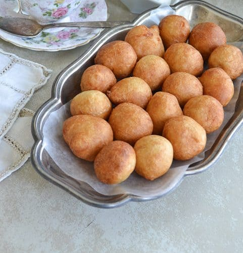

FOOD COLUMN
BREAKFAST
Breakfast could be toasted bread, butter, fried eggs, sausage, bread and egg, yam and egg, noodles, sardines etc. all laid out at the table.
Here is a common Nigerian breakfast dish and how to prepare it.

Akara and Pap
Akara and Pap is Naija's weekend morning meal for most homes because of its light and filling nature. Eating Akara and pap will boost your energy metabolism to get on with your daily activities with ease. Also, it can be eaten for breakfast or dinner or served as a pre-proper meal. Best enjoyed when the Akara is served hot with Pap... maybe not too hot.
- Vegetable oil
- Beans
- Scotch bonnet
- Onions
- Crayfish
- Salt
- Seasoning cubes
- Corn Pap
- Milk
INGREDIENTS
- Blend already washed and peeled beans together with scotch bonnet, onions and crayfish into a smooth paste
- Pour into a bowl, add salt and seasoning cubes to taste then mix well until the barter is airy and fluffy
- Pour Golden penny pure vegetable oil in a frying pan and allow to heat up
- Scoop the beans barter using a spoon into the preheated oil and fry till golden brown
- Remove from oil and set aside
- Mix Corn Pap with cold water until it is of smooth consistency
- Stir on heat till it thickens
- Serve into a serving bowl and garnish with milk
INSTRUCTIONS
LUNCH
The Nigeria lunch could be Rice and Stew, Beans and dodo, Amala and Ewedu, Eba with Okro and Meat etc .
Here is a common Nigerian lunch dish and how to prepare it.

Rice and stew
'Rice and Stew' is one of the most popular dishes in Nigeria. It is as simple to cook but garnishing makes this dish more interesting.
- 4 cups rice
- 20 fresh tomatoes big
- 5 cup vegetable oil
- 10 fresh pepper big
- 2 big onion bulb
- Salt
- Seasoning cubes
- Corn Pap
- 3 tablespoon curry
- 1 tablespoon thyme
- 3 pieces ginger medium
- 6 cloves garlic
- 300 g chicken meat
INGREDIENTS
- Boil the rice with salt until is cooked and dry
- Season meat properly to get the stock
- When it is cooked, you could fry or grill the meat if you like
- Pour the vegetable oil into a pot and place on heat
- Throw in the chopped onions when the oil is hot
- Pour the blended tomatoes into the pot and allow to cook for about 10mins
- Pour in the stock and cook further
- Add the seasoning cube, ginger, crushed garlic, curry and thyme
- Cook for another 20mins
- Add the meat and salt to taste
INSTRUCTIONS
DINNER
The Nigeria dinner could be Egusi and fufu, Ogbono and Pounded Yam, Eba and Okro etc.
Here is a common Nigerian dinner dish and how to prepare it.

Egusi and Fufu
When fufu is combined with egusi soup, it serves as dinner to millions of Nigerians. Egusi soup is the most popular soup in Nigeria and unarguably loved by every Nigerian.
- 1KG or 2.2lb beef
- 4 cups of egusi (melon)
- 1lb or 500g Roasted fish.
- Half cup of ground crayfish
- a handful of sliced utazi leaves
- Salt
- Seasoning cubes
- Pepper to taste (scotch bonnet).
INGREDIENTS
- Grind the four cups of egusi with a dry blender or hand grinding machine and set them aside in a bowl.
Add about a cup of water to it and stir to make a very thick paste, as you can see below. - Parboil the meat with all the ingredients, it is advisable to parboil meat with some ingredients before adding to the principal food, this improves the taste of the meat.
- Parboil for about ten minutes, then add water and cook till the meat is tender and the stock (water) is about to dry. Use two seasoning cubes, a teaspoon of salt and a half cup of sliced onions.
- Pour hot water over the stockfish in a bowl and wash thoroughly to remove sand, then set aside. Also, remove the center bone from the roasted fishes, wash and set aside too.
- Set your cooking pot on the fire and add 300ml of palm oil (red oil), allow to heat for a minute but don't allow to bleach. Add the egusi paste and keep stirring for the next eight to ten minutes to form seed-like crumbs. Then transfer the already cooked meat into the pot, stir.
- Add the washed dry fish, stockfish, ground crayfish, a seasoning cube, ground scotch bonnet pepper, and 2 cups of water. Then cover halfway and allow boiling for the next ten minutes.
- Stir occasionally to avoid burning. One spoon of ground dawadawa (local ingredients), and a taste for salt and pepper. Add a handful of sliced utazi leaves. Allow to simmer on low heat for 2 minutes, stir, and you just made a delicious pot of egusi soup
- Eat with your fufu
INSTRUCTIONS
DESSERT
This is a very common dessert in Nigeria and can also be eaten as a snack. When in smaller sizes, it is mostly used for “small chops” on Nigerian occasions..
Here is a common Nigerian dessert and how to prepare it.
Puff Puff
Puff puff is an African classic, usually sold in street-side shops.
- 600g all-purpose flour
- 10g fast action yeast
- 150g sugar (use as desired)
- ½ tsp salt
- 550-650g Lukewarm Water
- 1-3tbsp chilli flakes (substitute with cayenne pepper)
- Vegetable oil for frying
INGREDIENTS
- In a shallow bowl, add flour and salt together (combine salt with flour first)
- Add other dry ingredients and combine well
- Add lukewarm water to the dry mixture in bits to form a batter.
- You can add 500g at first then check if it needs more water. (the batter should not be runny and it shouldn't be thick as well, find a balance in between the two)
- Cover the bowl with a cling film or a damp towel and place in a warm place to proof. (Till batter doubles in size usually between an hour or two. You can leave it longer if you want)
- Once the mixture has risen and doubled in size, you then move on to frying.
- People always find scooping batter in oil very tricky but I tell you it is very easy. on medium-high heat, add enough oil to a frying pan and heat till hot. Drop a tiny bit of batter in hot oil to test and if the batter floats to the top of the heat then it is ready to use.
- simply use a scoop to put the batter into the oil.